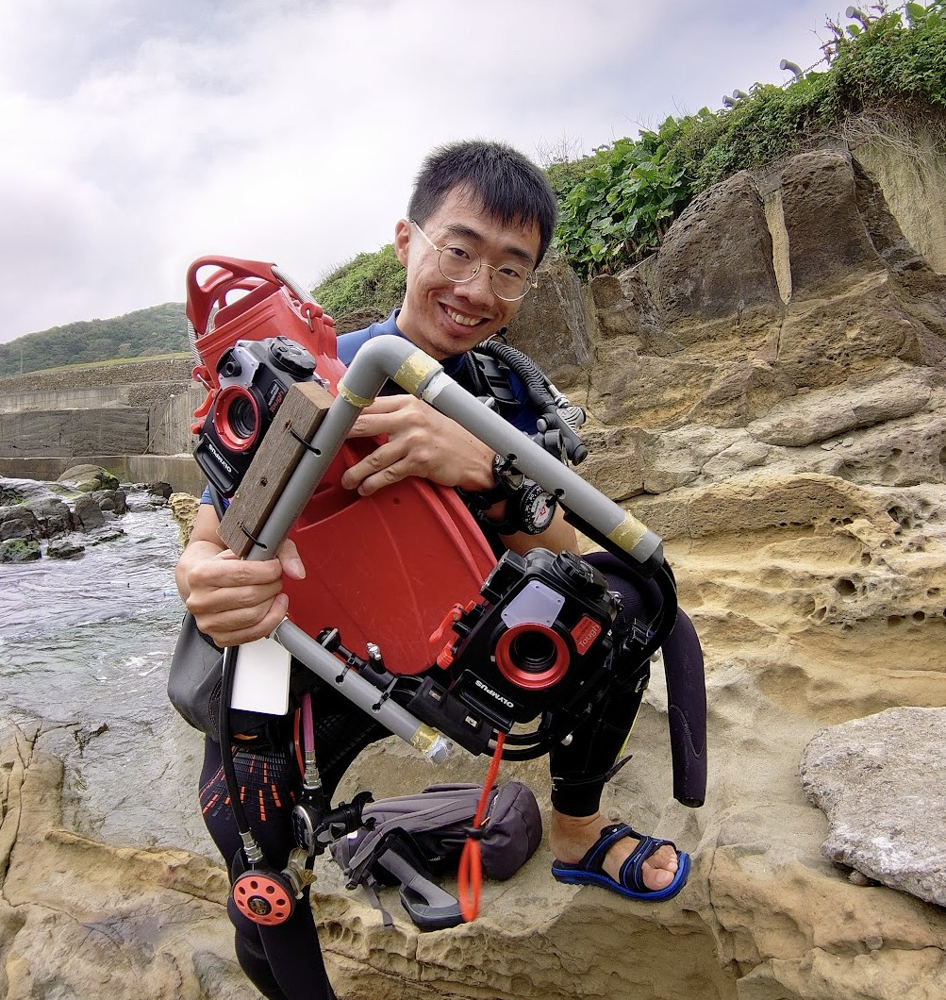
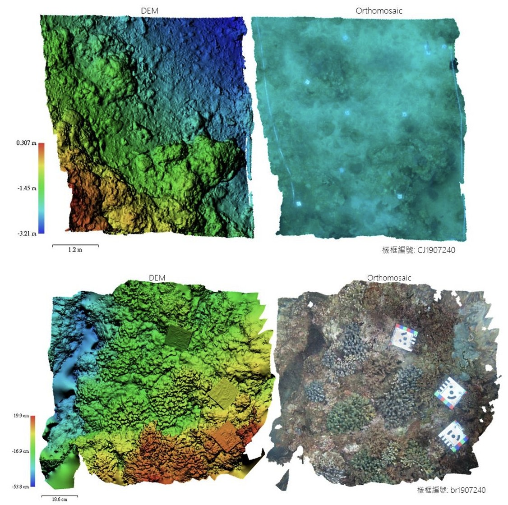

Overview計畫概述
Coral reefs possess highly complex three-dimensional structures that provide critical ecological functions and support rich biodiversity. However, quantifying this spatial complexity to assess reef functional status remains a major challenge. This project applied Structure-from-Motion (SfM) photogrammetry to build high-resolution 3D models of coral reefs at the Chaojing Bay Marine Conservation Area in Keelung, northern Taiwan. Combined with GIS-based spatial analyses — including slope, rugosity, and Vector Ruggedness Measure (VRM) — the study produced millimetre-resolution digital elevation models and orthomosaics, enabling quantitative comparisons of reef structure across different benthic features and disturbance conditions.
珊瑚礁擁有極為複雜的立體結構，提供各種生態功能並造就豐富的生物多樣性，但如何將複雜的立體空間量化以評估珊瑚礁的功能狀態，是一項重要課題。本計畫選定台灣北部基隆市的潮境海灣資源保育區，以運動恢復結構（SfM）方法建立高解析度的珊瑚礁 3D 模型，並搭配 GIS 軟體進行斜度、粗糙度、VRM 等參數分析，取得毫米級解析度的數值高程模型與正射影像，進行不同底棲特徵與干擾條件的量化比較研究。
Key Findings主要發現
- Branching corals exhibited the highest surface rugosity (6.39) and VRM (0.368), while encrusting corals had the lowest rugosity (1.83), demonstrating that SfM-derived spatial metrics can clearly differentiate coral morphotypes.
分支形珊瑚具有最高的表面粗糙度（6.39）與 VRM（0.368），表覆形珊瑚的粗糙度最低（1.83），顯示 SfM 衍生的空間指標能有效區分不同珊瑚型態。 - VRM effectively distinguished complex (>0.25) from simple (<0.15) coral types, providing a robust metric for automated benthic habitat classification.
VRM 能有效區別複雜（>0.25）與簡單（<0.15）的珊瑚種類，為底棲棲地自動分類提供可靠的量化指標。 - Average slope was the strongest predictor of linear rugosity across all survey plots, and mesh model vertex and face counts reflected the degree of structural complexity.
平均斜度是所有樣框中線性粗糙度最強的預測因子，多邊形網格模型中的頂點與面數量也能反映出立體結構的複雜程度。 - The study established a complete standard operating procedure for underwater SfM surveys, 3D model construction, and GIS-based spatial analysis, applicable to future long-term coral reef monitoring and disturbance assessment.
本研究建立了完整的水下 SfM 調查、3D 模型建構與 GIS 空間分析的標準作業流程，可應用於未來的珊瑚礁長期監測與干擾評估。

Chaojing Bay reef survey · 潮境海灣珊瑚礁調查

SfM-derived DEM & orthomosaic · SfM 數值高程模型與正射影像